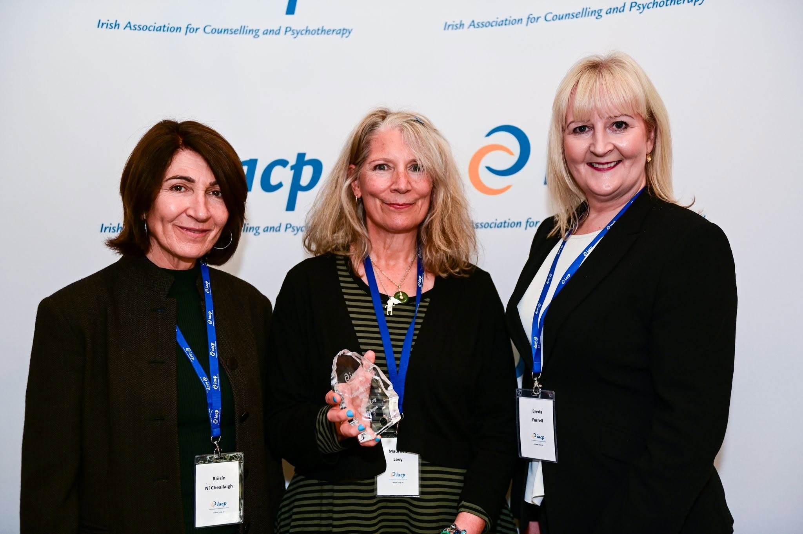

I was delighted to receive the IACP Dublin Regional Award 2022 at the Irish Association for Counselling and Psychotherapy Annual Conference.
The regional awards recognise accredited IACP members for their contribution to the counselling and psychotherapy profession within their local community and region.
The award was presented during the IACP Annual Conference in Galway and was a wonderful acknowledgement of my work and involvement in counselling and psychotherapy in Dublin.
I am very grateful to the IACP and to the colleagues and friends I have worked alongside over the years.